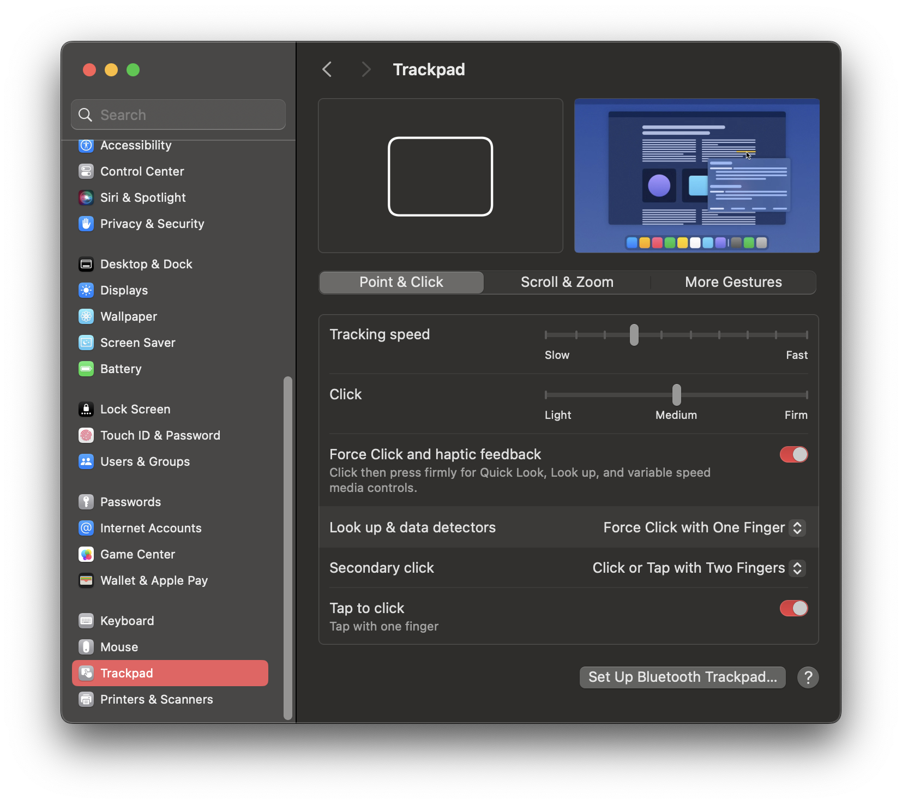
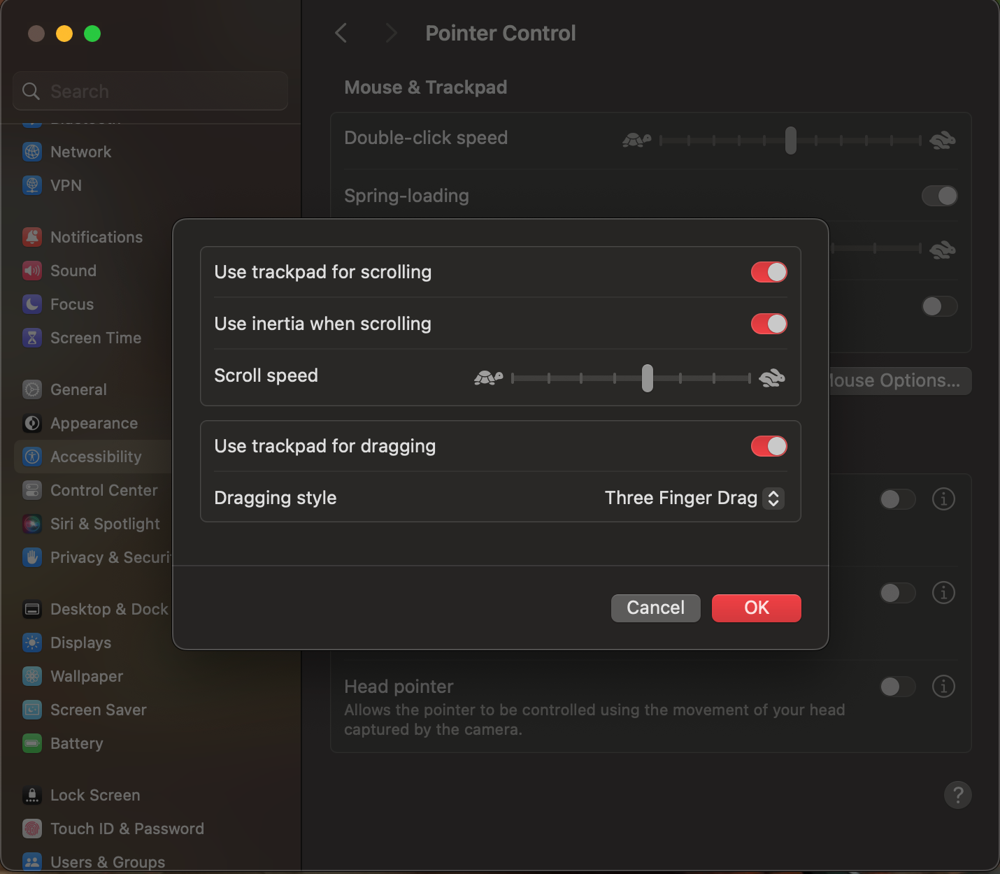
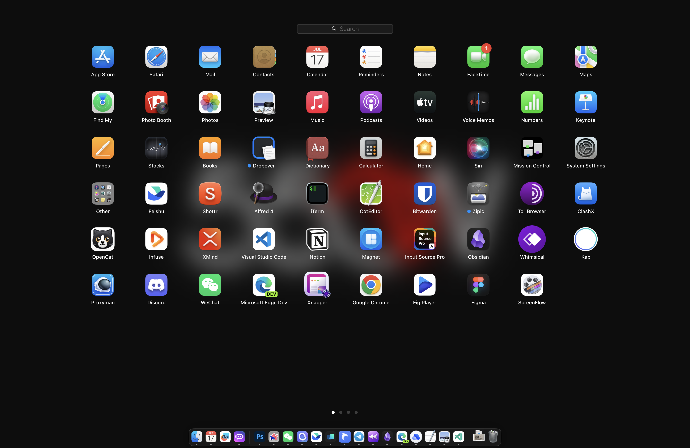
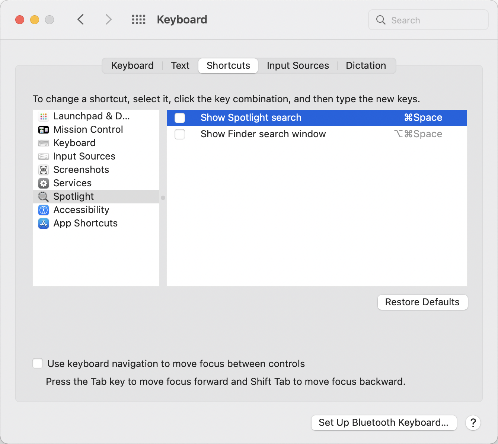

Tap to Click
Trackpad → Point & Click

No wrapper script needed here. Each common preference is listed with either a direct command or the exact System Settings path.
This setup keeps Tap to Click and three-finger drag, speeds up Dock autohide, expands Launchpad to 10x8, and keeps App Expose turned off.
Use the command when one exists. Otherwise follow the short manual path.
defaults write com.apple.AppleMultitouchTrackpad Clicking -bool true defaults write com.apple.driver.AppleBluetoothMultitouch.trackpad Clicking -bool true defaults -currentHost write NSGlobalDomain com.apple.mouse.tapBehavior -int 1 defaults write NSGlobalDomain com.apple.mouse.tapBehavior -int 1
System Settings → Accessibility → Pointer Control → Trackpad Options → enable "Use trackpad for dragging" and choose "three finger drag"
defaults write com.apple.dock autohide-time-modifier -float 0.5 defaults write com.apple.dock autohide-delay -int 0 killall Dock
defaults write com.apple.dock springboard-columns -int 10 defaults write com.apple.dock springboard-rows -int 8 killall Dock
defaults delete com.apple.dock autohide-time-modifier defaults delete com.apple.dock autohide-delay defaults write com.apple.dock springboard-rows Default defaults write com.apple.dock springboard-columns Default killall Dock
System Settings → Trackpad → More Gestures → keep App Expose disabled
System Settings → Keyboard → Keyboard Shortcuts → Spotlight → disable the Spotlight shortcut you want to reclaim
Keeping the images nearby makes the manual path faster when the UI changes names slightly.
Trackpad → Point & Click

Accessibility → Pointer Control → Trackpad Options

Reference view after the Dock restart.

Disable Spotlight if Keyboard Maestro is taking the launcher shortcut.
